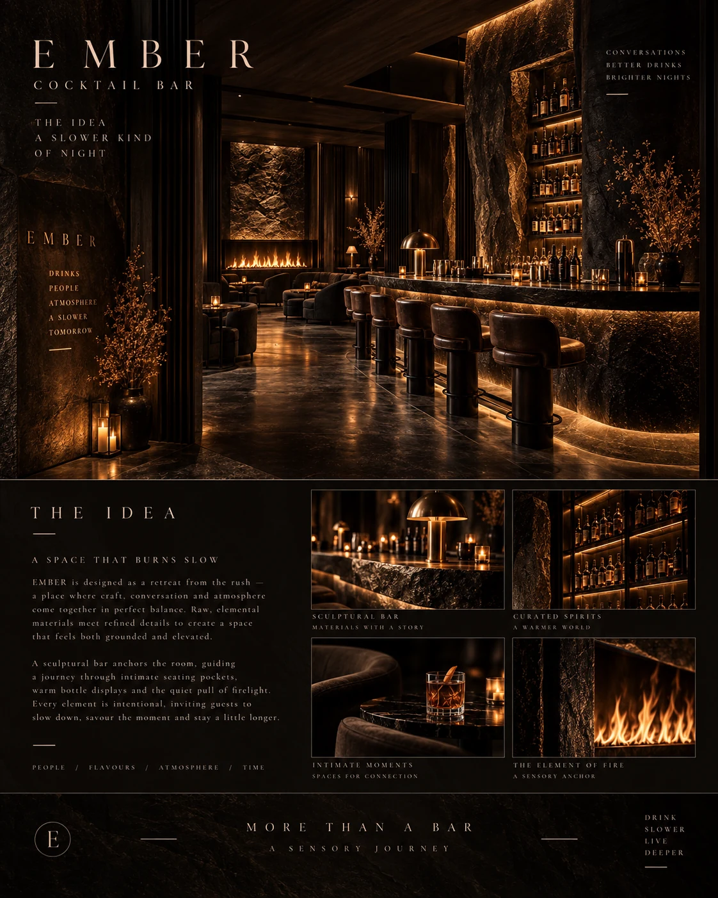
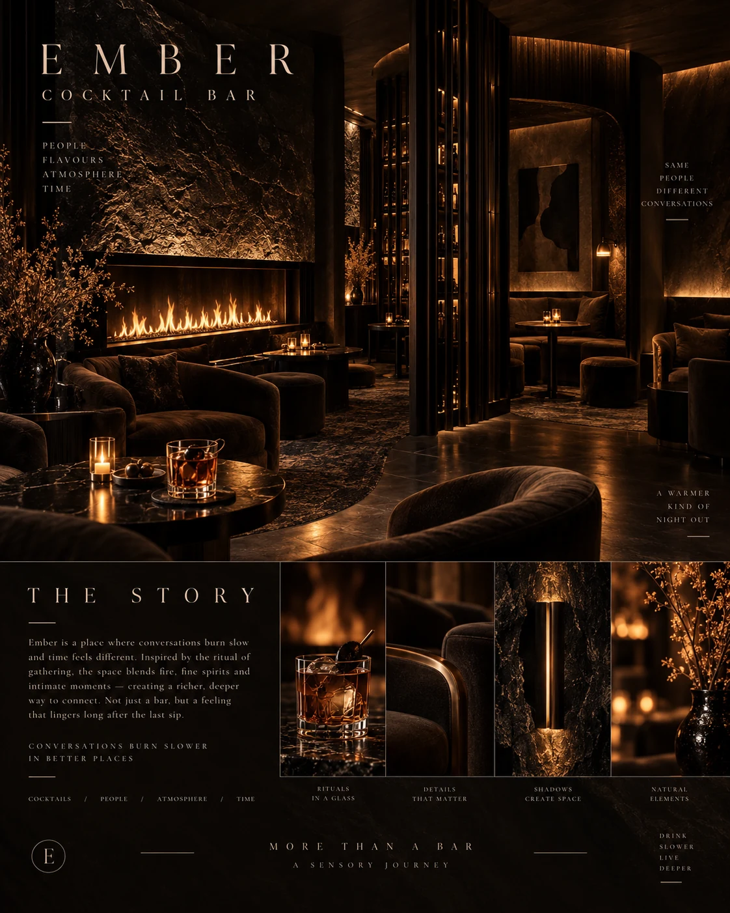
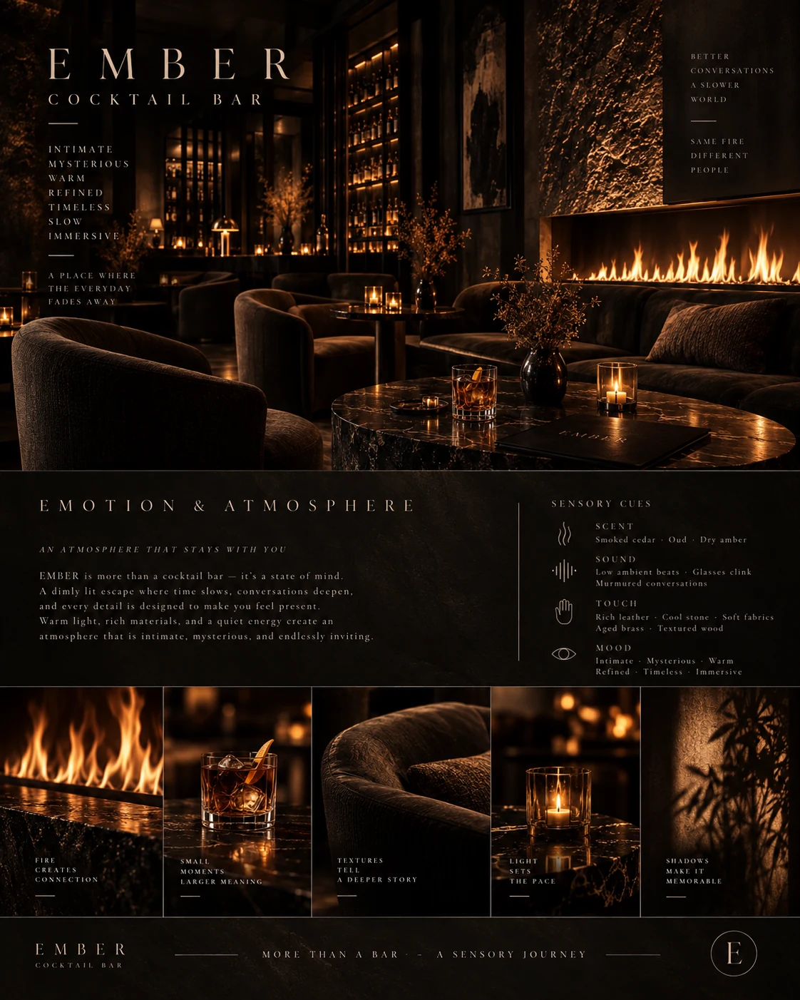
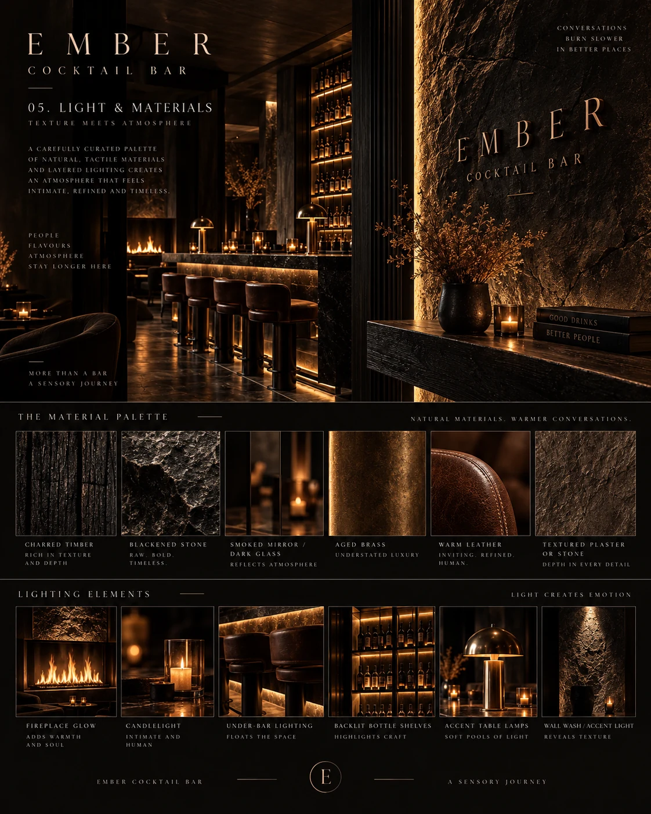
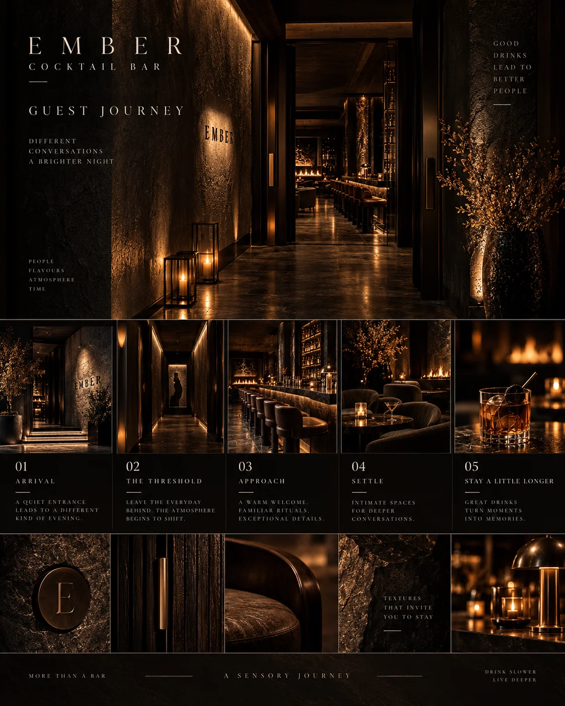

Sensory cocktail bar concept
EMBER
A slower kind of night. Fire, texture and atmosphere designed around deeper conversations.

EMBER is a sensory cocktail bar concept built around slow evenings, deeper conversations and the quiet drama of fire, shadow and texture. A sculptural stone bar and warmly illuminated bottle shelves form the social centre, while fireside seating and sheltered booths offer more intimate places to settle. The concept explores how the transition from entrance to lounge can change the pace of an evening. Rich surfaces, soft upholstery and carefully placed light create a setting intended to feel grounded, welcoming and quietly theatrical.
Material direction
Charred timber; blackened stone; smoked mirror and dark glass; aged brass; warm leather; textured plaster or stone; soft woven upholstery. These are concept-stage material directions, with final products and detailing to be developed separately.
My role
Concept, atmosphere, lighting, materials and guest journey — Maria Andriiuk.
Concept & story
The name EMBER reflects the lingering warmth of a fire and the rhythm of an unhurried conversation. The bar is imagined as a retreat from the rush, where the ritual of gathering shapes the spatial story. A strong central counter creates a shared focal point, balanced by smaller seating areas for different kinds of encounters.
Emotion & atmosphere
The intended mood is intimate, warm and subtly mysterious. Dark surfaces frame the light rather than competing with it, while leather and soft fabrics invite guests to settle. The sensory brief explores low ambient sound and woody scent references such as cedar and dry amber; these remain creative directions for later operational consideration.
Light & material direction
Fireplace glow and candle-like accents provide the emotional focus. Under-bar lighting, backlit bottle shelves, small table lamps and grazing light across textured walls create distinct layers. Rough stone and charred timber contrast with aged brass, smoked reflections and smooth leather. Technical lighting, fireplace integration and final specifications would be resolved during further design development.
Guest journey
01 / Arrival — A restrained entrance introduces the warm glow within. 02 / Threshold — A softly lit passage marks the transition from the everyday. 03 / Approach — The sculptural bar and illuminated shelves draw guests into the room. 04 / Settle — Lounge chairs, booths and fireside seating offer a choice of social settings. 05 / Stay — Tactile details and intimate lighting support a slower, more personal evening.
Project scope
This self-initiated, unbuilt concept is presented through seven boards covering the idea, story, atmosphere, light and materials, guest journey and final composition. Concept imagery communicates the creative direction. Measured planning, construction documentation, engineering and site delivery are outside this concept study.

The idea — A slower kind of night: the central bar connects intimate seating pockets and the glow of the fireplace.Open full size ↗
The story — Fireside seating and sheltered booths create settings for conversation, gathering and unhurried evenings.Open full size ↗
Emotion & atmosphere — Firelight, tactile upholstery and quiet pools of light shape the proposed sensory experience.Open full size ↗
Light & materials — Charred timber, blackened stone, smoked mirror, aged brass and warm leather meet layered amber lighting.Open full size ↗
Guest journey — Arrival, threshold, approach, settle and stay: five moments connect the entrance, bar and lounge.Open full size ↗